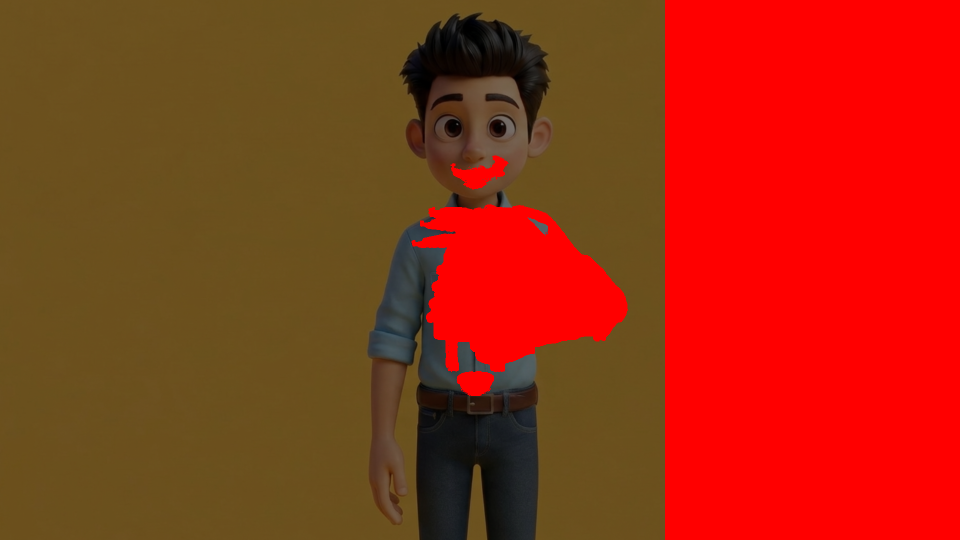
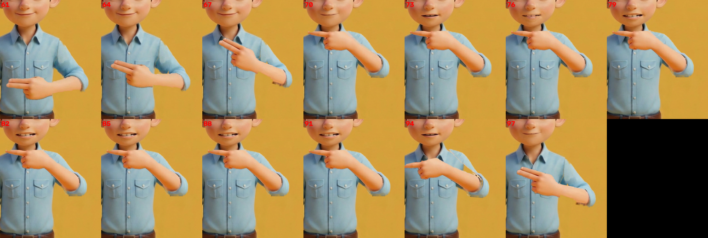
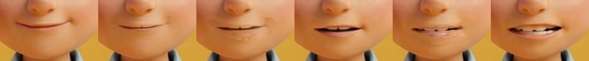
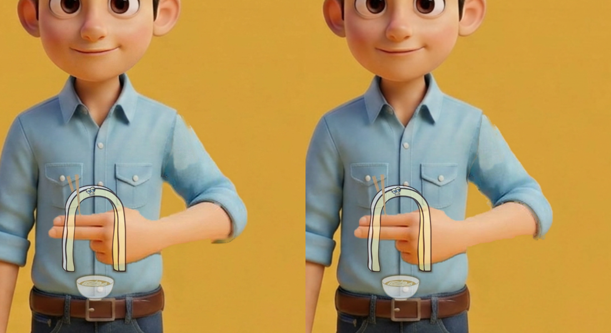
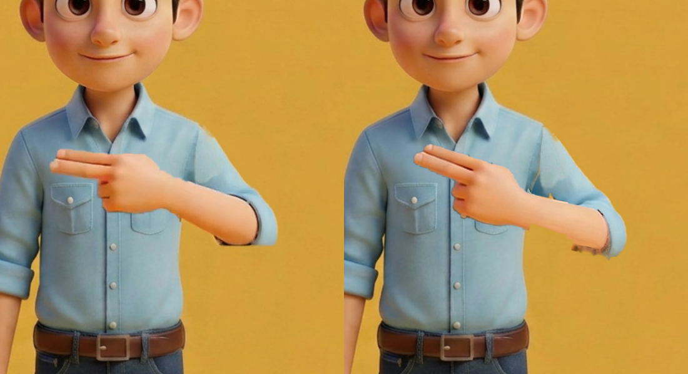
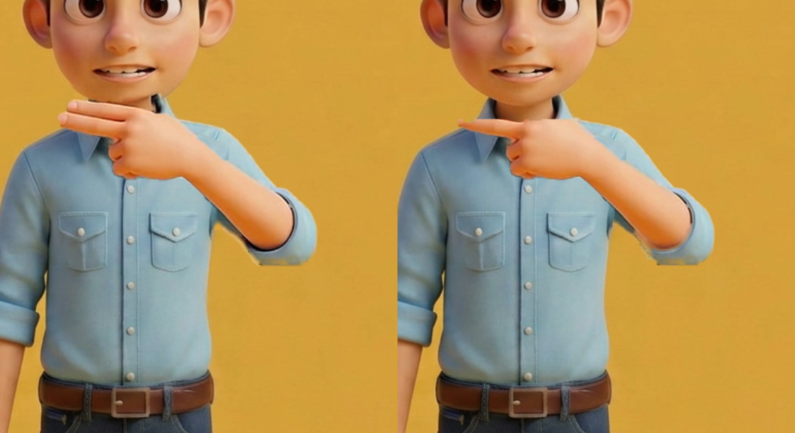
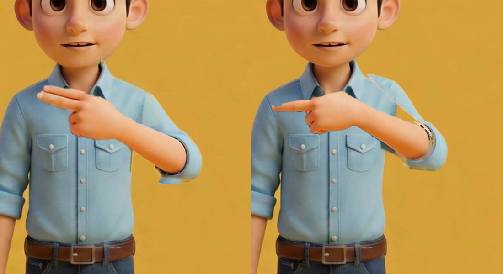
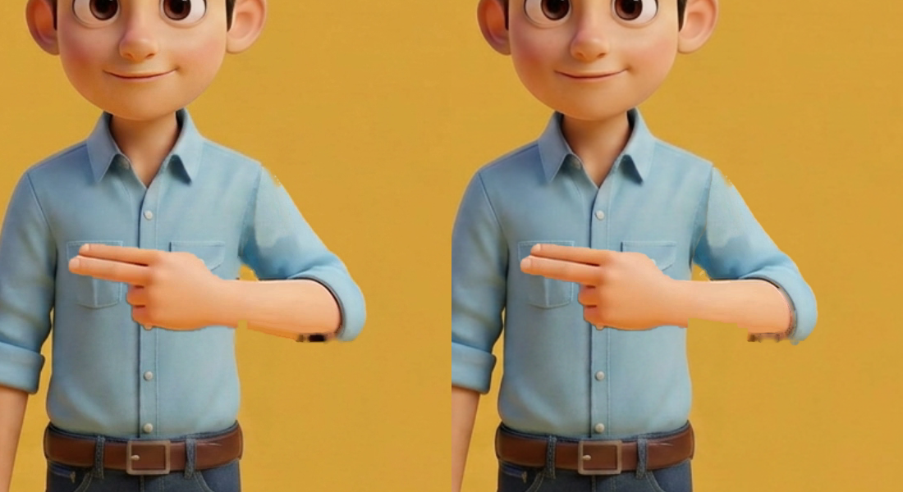

1 · 動画
音を出して、見てください。
名前 → /n/ ×3（10.00秒）確認待ち · 10.0秒・1920×1080・24.0fps・音声あり
作成：フォニ丸pi
PROS PHONICS / 成果物 · N・v15 試作
蜂谷さんのご依頼（11/6 22:52）の試作です。動画からの切り貼りはしていません。体は腕なしの絵1枚のまま全コマ動かず、腕は3つのポーズの絵（お腹・胸・あご）を、v13 の手の動きに合わせて回しています。口は新しく描いた中間の絵を1コマずつ切りかえています。音声は v13 のままです。
| 文字 | 判定 | 中身 |
|---|---|---|
| N | ○ | 1. パーツ: 腕なしの体（v13 の作り方の腕なしの絵）、上腕（袖）、前腕＋手、あご（顔の肌）を別々の絵にしました。重ね順は 体 → 上腕 → 前腕＋手 → あご（手より上）→ 口 です。 |
| N | ○ | 2. 動き: 上腕は肩、前腕は肘を軸に回しています。各コマの角度は、v13 の腕の形に一番合うように測って決めました（動画は形を測るのに使っただけで、絵は切り貼りしていません）。 |
| N | ○ | 3. 腕の絵は3ポーズ（お腹・胸・あご）。動きの途中で一番近いポーズに切りかえます。肘で回した時の継ぎ目は、すぐそばの袖・腕の色で埋めています。 |
| N | ○ | 4. 袖口の黒っぽい影: パーツを切り出す段階で、肘から 45px 以内の黒っぽい画素を周りの色で塗り直しました（腕の範囲の黒っぽい画素は v13 の平均 394 → v15 は 157）。 |
| N | ○ | 5. 口: 閉じ → 少し → 少し多め → 半分 → 間 → n_2 の、新しい中間の口を3枚描きました。2枚の口を重ねず、唇の線を1本だけ少しずつ動かして描いています。1コマに1枚だけ使います。 |
| N | ○ | 6. 体: 腕と口の範囲の外は、全コマで腕なしの絵と同じです（Nancy が出ている1〜57コマの Nancy の範囲と、カードは v13 のまま）。 |
| N | △ | 画像AI・動画AIは使っていません（費用 0ドル）。腕のポーズの描き足しもしていません。 |
| N | △ | v13（セーブポイント）と v14 はそのまま残しています。 |








ご意見は phonics-seisaku チャンネルで @phonimaru-pi を付けて書いてください（例: @phonimaru-pi B の手をもう少しゆっくり）。
N_nancy_noodle_v15.mp4 sha256 55bf1d83660c